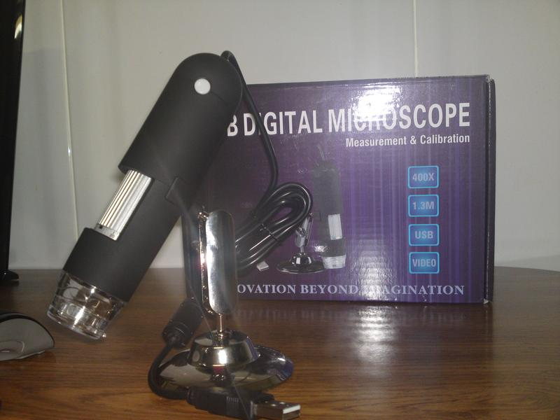

Comercial y representaciones J. Velasco
Comercial y representaciones J. VelascoCaracterísticas
- Plug and play, no necesita driver.
- Equipado con 8 LED para el uso en los puntos con poca luz.
- Alcance focal: 10mm-500mm.
- Lente: CMOS de 1,3 MP (2MP por interpolación).
- Ampliación: 20x-400x.
- Soporta grabación de AVI.
- Cable USB de 140 cm.
- Formato de imagen soportados: JPEG / BMP en 1600*1200 max.
- Idiomas: Inglés / alemán / español / francés / ruso.
- Funciona con Windows 2000/XP/Vista/7.
- Funciona con Mac 10.05 o superior.
- El paquete incluye soporte de montaje + CD con software + manual en Inglés.
